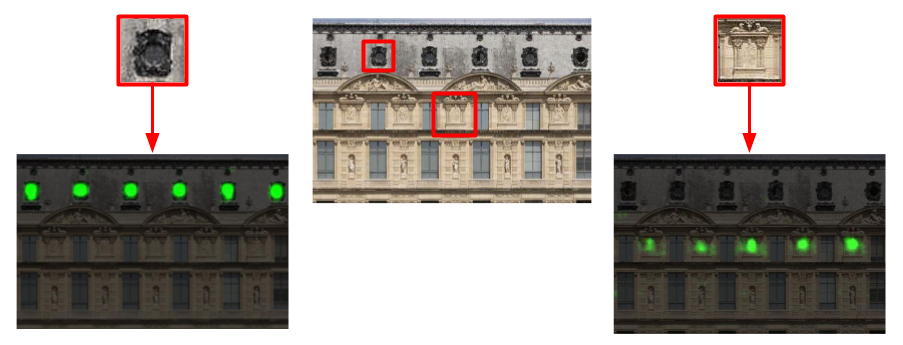

Research

I am a third-year PhD student advised by Andrew Zisserman in the Visual Geometry Group (VGG) at the University of Oxford. My current research interests span various topics in computer vision, particularly at the intersection of vision and graphics.
Previously, I received my B.S. in Computer Science and Engineering from MIT, where I worked with Josh Tenenbaum and Bill Freeman. I have also done several internships at Google, as well as spent a lovely summer at EPFL working with Sabine Süsstrunk.